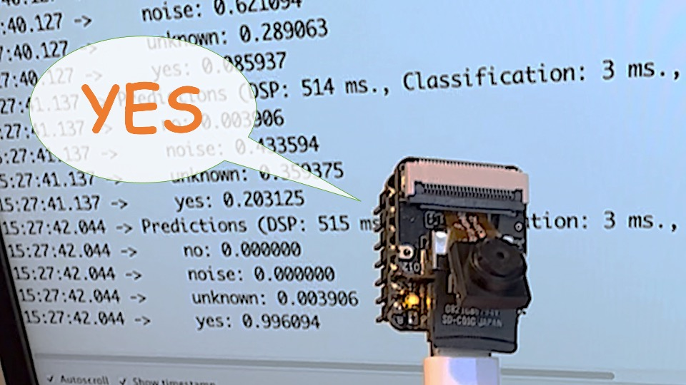

Keyword Spotting (KWS)

Introduction
Keyword Spotting (KWS) is integral to many voice recognition systems, enabling devices to respond to specific words or phrases. While this technology underpins popular devices like Google Assistant or Amazon Alexa, it’s equally applicable and achievable on smaller, low-power devices. This lab will guide you through implementing a KWS system using TinyML on the XIAO ESP32S3 microcontroller board.
The XIAO ESP32S3, equipped with Espressif’s ESP32-S3 chip, is a compact and potent microcontroller offering a dual-core Xtensa LX7 processor, integrated Wi-Fi, and Bluetooth. Its balance of computational power, energy efficiency, and versatile connectivity make it a fantastic platform for TinyML applications. Also, with its expansion board, we will have access to the “sense” part of the device, which has a 1600x1200 OV2640 camera, an SD card slot, and a digital microphone. The integrated microphone and the SD card will be essential in this project.
We will utilize the Edge Impulse Studio, a powerful, user-friendly platform that simplifies creating and deploying machine learning models onto edge devices. We’ll train a KWS model step-by-step, optimizing and deploying it onto the XIAO ESP32S3 Sense.
Our model will be designed to recognize keywords that can trigger device wake-up or specific actions (in the case of “YES”), bringing your projects to life with voice-activated commands.
Leveraging our experience with TensorFlow Lite for Microcontrollers (the engine “under the hood” on the EI Studio), we’ll create a KWS system capable of real-time machine learning on the device.
As we progress through the lab, we’ll break down each process stage - from data collection and preparation to model training and deployment - to provide a comprehensive understanding of implementing a KWS system on a microcontroller.
How does a voice assistant work?
Keyword Spotting (KWS) is critical to many voice assistants, enabling devices to respond to specific words or phrases. To start, it is essential to realize that Voice Assistants on the market, like Google Home or Amazon Echo-Dot, only react to humans when they are “waked up” by particular keywords such as “ Hey Google” on the first one and “Alexa” on the second.

In other words, recognizing voice commands is based on a multi-stage model or Cascade Detection.

Stage 1: A smaller microprocessor inside the Echo Dot or Google Home continuously listens to the sound, waiting for the keyword to be spotted. For such detection, a TinyML model at the edge is used (KWS application).
Stage 2: Only when triggered by the KWS application on Stage 1 is the data sent to the cloud and processed on a larger model.
The video below shows an example where I emulate a Google Assistant on a Raspberry Pi (Stage 2), having an Arduino Nano 33 BLE as the tinyML device (Stage 1).
If you want to go deeper on the full project, please see my tutorial: Building an Intelligent Voice Assistant From Scratch.
In this lab, we will focus on Stage 1 (KWS or Keyword Spotting), where we will use the XIAO ESP2S3 Sense, which has a digital microphone for spotting the keyword.
The KWS Project
The below diagram will give an idea of how the final KWS application should work (during inference):

Our KWS application will recognize four classes of sound:
- YES (Keyword 1)
- NO (Keyword 2)
- NOISE (no keywords spoken, only background noise is present)
- UNKNOW (a mix of different words than YES and NO)
Optionally for real-world projects, it is always advised to include different words than keywords, such as “Noise” (or Background) and “Unknow.”
The Machine Learning workflow
The main component of the KWS application is its model. So, we must train such a model with our specific keywords, noise, and other words (the “unknown”):

Dataset
The critical component of Machine Learning Workflow is the dataset. Once we have decided on specific keywords (YES and NO), we can take advantage of the dataset developed by Pete Warden, “Speech Commands: A Dataset for Limited-Vocabulary Speech Recognition.” This dataset has 35 keywords (with +1,000 samples each), such as yes, no, stop, and go. In other words, we can get 1,500 samples of yes and no.
You can download a small portion of the dataset from Edge Studio (Keyword spotting pre-built dataset), which includes samples from the four classes we will use in this project: yes, no, noise, and background. For this, follow the steps below:
- Download the keywords dataset.
- Unzip the file in a location of your choice.
Although we have a lot of data from Pete’s dataset, collecting some words spoken by us is advised. When working with accelerometers, creating a dataset with data captured by the same type of sensor was essential. In the case of sound, it is different because what we will classify is, in reality, audio data.
The key difference between sound and audio is their form of energy. Sound is mechanical wave energy (longitudinal sound waves) that propagate through a medium causing variations in pressure within the medium. Audio is made of electrical energy (analog or digital signals) that represent sound electrically.
The sound waves should be converted to audio data when we speak a keyword. The conversion should be done by sampling the signal generated by the microphone in 16KHz with a 16-bit depth.
So, any device that can generate audio data with this basic specification (16Khz/16bits) will work fine. As a device, we can use the proper XIAO ESP32S3 Sense, a computer, or even your mobile phone.

Capturing online Audio Data with Edge Impulse and a smartphone
In the lab Motion Classification and Anomaly Detection, we connect our device directly to Edge Impulse Studio for data capturing (having a sampling frequency of 50Hz to 100Hz). For such low frequency, we could use the EI CLI function Data Forwarder, but according to Jan Jongboom, Edge Impulse CTO, audio (16KHz) goes too fast for the data forwarder to be captured. So, once we have the digital data captured by the microphone, we can turn it into a WAV file to be sent to the Studio via Data Uploader (same as we will do with Pete’s dataset).
If we want to collect audio data directly on the Studio, we can use any smartphone connected online with it. We will not explore this option here, but you can easily follow EI documentation.
Capturing (offline) Audio Data with the XIAO ESP32S3 Sense
The built-in microphone is the MSM261D3526H1CPM, a PDM digital output MEMS microphone with Multi-modes. Internally, it is connected to the ESP32S3 via an I2S bus using pins IO41 (Clock) and IO41 (Data).

What is I2S?
I2S, or Inter-IC Sound, is a standard protocol for transmitting digital audio from one device to another. It was initially developed by Philips Semiconductor (now NXP Semiconductors). It is commonly used in audio devices such as digital signal processors, digital audio processors, and, more recently, microcontrollers with digital audio capabilities (our case here).
The I2S protocol consists of at least three lines:

1. Bit (or Serial) clock line (BCLK or CLK): This line toggles to indicate the start of a new bit of data (pin IO42).
2. Word select line (WS): This line toggles to indicate the start of a new word (left channel or right channel). The Word select clock (WS) frequency defines the sample rate. In our case, L/R on the microphone is set to ground, meaning that we will use only the left channel (mono).
3. Data line (SD): This line carries the audio data (pin IO41)
In an I2S data stream, the data is sent as a sequence of frames, each containing a left-channel word and a right-channel word. This makes I2S particularly suited for transmitting stereo audio data. However, it can also be used for mono or multichannel audio with additional data lines.
Let’s start understanding how to capture raw data using the microphone. Go to the GitHub projectand download the sketch: XIAOEsp2s3_Mic_Test:
/*
XIAO ESP32S3 Simple Mic Test
*/
#include <I2S.h>
void setup() {
Serial.begin(115200);
while (!Serial) {
}
// start I2S at 16 kHz with 16-bits per sample
I2S.setAllPins(-1, 42, 41, -1, -1);
if (!I2S.begin(PDM_MONO_MODE, 16000, 16)) {
Serial.println("Failed to initialize I2S!");
while (1); // do nothing
}
}
void loop() {
// read a sample
int sample = I2S.read();
if (sample && sample != -1 && sample != 1) {
Serial.println(sample);
}
}This code is a simple microphone test for the XIAO ESP32S3 using the I2S (Inter-IC Sound) interface. It sets up the I2S interface to capture audio data at a sample rate of 16 kHz with 16 bits per sample and then continuously reads samples from the microphone and prints them to the serial monitor.
Let’s dig into the code’s main parts:
- Include the I2S library: This library provides functions to configure and use the I2S interface, which is a standard for connecting digital audio devices.
- I2S.setAllPins(-1, 42, 41, -1, -1): This sets up the I2S pins. The parameters are (-1, 42, 41, -1, -1), where the second parameter (42) is the PIN for the I2S clock (CLK), and the third parameter (41) is the PIN for the I2S data (DATA) line. The other parameters are set to -1, meaning those pins are not used.
- I2S.begin(PDM_MONO_MODE, 16000, 16): This initializes the I2S interface in Pulse Density Modulation (PDM) mono mode, with a sample rate of 16 kHz and 16 bits per sample. If the initialization fails, an error message is printed, and the program halts.
- int sample = I2S.read(): This reads an audio sample from the I2S interface.
If the sample is valid, it is printed on the Serial Monitor and Plotter.
Below is a test “whispering” in two different tones.

Save recorded sound samples (dataset) as .wav audio files to a microSD card
Let’s use the onboard SD Card reader to save .wav audio files; we must habilitate the XIAO PSRAM first.
ESP32-S3 has only a few hundred kilobytes of internal RAM on the MCU chip. It can be insufficient for some purposes so that ESP32-S3 can use up to 16 MB of external PSRAM (Psuedostatic RAM) connected in parallel with the SPI flash chip. The external memory is incorporated in the memory map and, with certain restrictions, is usable in the same way as internal data RAM.
For a start, Insert the SD Card on the XIAO as shown in the photo below (the SD Card should be formatted to FAT32).

Turn the PSRAM function of the ESP-32 chip on (Arduino IDE): Tools>PSRAM: “OPI PSRAM”>OPI PSRAM

- Download the sketch Wav_Record_dataset,which you can find on the project’s GitHub.
This code records audio using the I2S interface of the Seeed XIAO ESP32S3 Sense board, saves the recording as a.wav file on an SD card, and allows for control of the recording process through commands sent from the serial monitor. The name of the audio file is customizable (it should be the class labels to be used with the training), and multiple recordings can be made, each saved in a new file. The code also includes functionality to increase the volume of the recordings.
Let’s break down the most essential parts of it:
#include <I2S.h>
#include "FS.h"
#include "SD.h"
#include "SPI.h"Those are the necessary libraries for the program. I2S.h allows for audio input, FS.h provides file system handling capabilities, SD.h enables the program to interact with an SD card, and SPI.h handles the SPI communication with the SD card.
#define RECORD_TIME 10
#define SAMPLE_RATE 16000U
#define SAMPLE_BITS 16
#define WAV_HEADER_SIZE 44
#define VOLUME_GAIN 2Here, various constants are defined for the program.
- RECORD_TIME specifies the length of the audio recording in seconds.
- SAMPLE_RATE and SAMPLE_BITS define the audio quality of the recording.
- WAV_HEADER_SIZE specifies the size of the .wav file header.
- VOLUME_GAIN is used to increase the volume of the recording.
int fileNumber = 1;
String baseFileName;
bool isRecording = false;These variables keep track of the current file number (to create unique file names), the base file name, and whether the system is currently recording.
void setup() {
Serial.begin(115200);
while (!Serial);
I2S.setAllPins(-1, 42, 41, -1, -1);
if (!I2S.begin(PDM_MONO_MODE, SAMPLE_RATE, SAMPLE_BITS)) {
Serial.println("Failed to initialize I2S!");
while (1);
}
if(!SD.begin(21)){
Serial.println("Failed to mount SD Card!");
while (1);
}
Serial.printf("Enter with the label name\n");
}The setup function initializes the serial communication, I2S interface for audio input, and SD card interface. If the I2S did not initialize or the SD card fails to mount, it will print an error message and halt execution.
void loop() {
if (Serial.available() > 0) {
String command = Serial.readStringUntil('\n');
command.trim();
if (command == "rec") {
isRecording = true;
} else {
baseFileName = command;
fileNumber = 1; //reset file number each time a new basefile name is set
Serial.printf("Send rec for starting recording label \n");
}
}
if (isRecording && baseFileName != "") {
String fileName = "/" + baseFileName + "." + String(fileNumber) + ".wav";
fileNumber++;
record_wav(fileName);
delay(1000); // delay to avoid recording multiple files at once
isRecording = false;
}
}In the main loop, the program waits for a command from the serial monitor. If the command is rec, the program starts recording. Otherwise, the command is assumed to be the base name for the .wav files. If it’s currently recording and a base file name is set, it records the audio and saves it as a.wav file. The file names are generated by appending the file number to the base file name.
void record_wav(String fileName)
{
...
File file = SD.open(fileName.c_str(), FILE_WRITE);
...
rec_buffer = (uint8_t *)ps_malloc(record_size);
...
esp_i2s::i2s_read(esp_i2s::I2S_NUM_0,
rec_buffer,
record_size,
&sample_size,
portMAX_DELAY);
...
}This function records audio and saves it as a.wav file with the given name. It starts by initializing the sample_size and record_size variables. record_size is calculated based on the sample rate, size, and desired recording time. Let’s dig into the essential sections;
File file = SD.open(fileName.c_str(), FILE_WRITE);
// Write the header to the WAV file
uint8_t wav_header[WAV_HEADER_SIZE];
generate_wav_header(wav_header, record_size, SAMPLE_RATE);
file.write(wav_header, WAV_HEADER_SIZE);This section of the code opens the file on the SD card for writing and then generates the .wav file header using the generate_wav_header function. It then writes the header to the file.
// PSRAM malloc for recording
rec_buffer = (uint8_t *)ps_malloc(record_size);
if (rec_buffer == NULL) {
Serial.printf("malloc failed!\n");
while(1) ;
}
Serial.printf("Buffer: %d bytes\n", ESP.getPsramSize() - ESP.getFreePsram());The ps_malloc function allocates memory in the PSRAM for the recording. If the allocation fails (i.e., rec_buffer is NULL), it prints an error message and halts execution.
// Start recording
esp_i2s::i2s_read(esp_i2s::I2S_NUM_0,
rec_buffer,
record_size,
&sample_size,
portMAX_DELAY);
if (sample_size == 0) {
Serial.printf("Record Failed!\n");
} else {
Serial.printf("Record %d bytes\n", sample_size);
}The i2s_read function reads audio data from the microphone into rec_buffer. It prints an error message if no data is read (sample_size is 0).
// Increase volume
for (uint32_t i = 0; i < sample_size; i += SAMPLE_BITS/8) {
(*(uint16_t *)(rec_buffer+i)) <<= VOLUME_GAIN;
}This section of the code increases the recording volume by shifting the sample values by VOLUME_GAIN.
// Write data to the WAV file
Serial.printf("Writing to the file ...\n");
if (file.write(rec_buffer, record_size) != record_size)
Serial.printf("Write file Failed!\n");
free(rec_buffer);
file.close();
Serial.printf("Recording complete: \n");
Serial.printf("Send rec for a new sample or enter a new label\n\n");Finally, the audio data is written to the .wav file. If the write operation fails, it prints an error message. After writing, the memory allocated for rec_buffer is freed, and the file is closed. The function finishes by printing a completion message and prompting the user to send a new command.
void generate_wav_header(uint8_t *wav_header,
uint32_t wav_size,
uint32_t sample_rate)
{
...
memcpy(wav_header, set_wav_header, sizeof(set_wav_header));
}The generate_wav_header function creates a.wav file header based on the parameters (wav_size and sample_rate). It generates an array of bytes according to the .wav file format, which includes fields for the file size, audio format, number of channels, sample rate, byte rate, block alignment, bits per sample, and data size. The generated header is then copied into the wav_header array passed to the function.
Now, upload the code to the XIAO and get samples from the keywords (yes and no). You can also capture noise and other words.
The Serial monitor will prompt you to receive the label to be recorded.

Send the label (for example, yes). The program will wait for another command: rec

And the program will start recording new samples every time a command rec is sent. The files will be saved as yes.1.wav, yes.2.wav, yes.3.wav, etc., until a new label (for example, no) is sent. In this case, you should send the command rec for each new sample, which will be saved as no.1.wav, no.2.wav, no.3.wav, etc.

Ultimately, we will get the saved files on the SD card.

The files are ready to be uploaded to Edge Impulse Studio
Capturing (offline) Audio Data Apps
Alternatively, you can also use your PC or smartphone to capture audio data with a sampling frequency 16KHz and a bit depth of 16 Bits. A good app for that is Voice Recorder Pro (IOS). You should save your records as .wav files and send them to your computer.

Note that any app, such as Audacity, can be used for audio recording or even your computer.
Training model with Edge Impulse Studio
Uploading the Data
When the raw dataset is defined and collected (Pete’s dataset + recorded keywords), we should initiate a new project at Edge Impulse Studio:

Once the project is created, select the Upload Existing Data tool in the Data Acquisition section. Choose the files to be uploaded:

And upload them to the Studio (You can automatically split data in train/test). Repete to all classes and all raw data.

The samples will now appear in the Data acquisition section.

All data on Pete’s dataset have a 1s length, but the samples recorded in the previous section have 10s and must be split into 1s samples to be compatible.
Click on three dots after the sample name and select Split sample.

Once inside the tool, split the data into 1-second records. If necessary, add or remove segments:

This procedure should be repeated for all samples.
Note: For longer audio files (minutes), first, split into 10-second segments and after that, use the tool again to get the final 1-second splits.
Suppose we do not split data automatically in train/test during upload. In that case, we can do it manually (using the three dots menu, moving samples individually) or using Perform Train / Test Split on Dashboard - Danger Zone.
We can optionally check all datasets using the tab Data Explorer.
Creating Impulse (Pre-Process / Model definition)
An impulse takes raw data, uses signal processing to extract features, and then uses a learning block to classify new data.

First, we will take the data points with a 1-second window, augmenting the data, sliding that window each 500ms. Note that the option zero-pad data is set. It is essential to fill with zeros samples smaller than 1 second (in some cases, I reduced the 1000 ms window on the split tool to avoid noises and spikes).
Each 1-second audio sample should be pre-processed and converted to an image (for example, 13 x 49 x 1). We will use MFCC, which extracts features from audio signals using Mel Frequency Cepstral Coefficients, which are great for the human voice.

Next, we select KERAS for classification and build our model from scratch by doing Image Classification using Convolution Neural Network).
Pre-Processing (MFCC)
The next step is to create the images to be trained in the next phase:
We can keep the default parameter values or take advantage of the DSP Autotuneparameters option, which we will do.

The result will not spend much memory to pre-process data (only 16KB). Still, the estimated processing time is high, 675 ms for an Espressif ESP-EYE (the closest reference available), with a 240KHz clock (same as our device), but with a smaller CPU ( XTensa LX6, versus the LX7 on the ESP32S). The real inference time should be smaller.
Suppose we need to reduce the inference time later. In that case, we should return to the pre-processing stage and, for example, reduce the FFT length to 256, change the Number of coefficients, or another parameter.
For now, let’s keep the parameters defined by the Autotuning tool. Save parameters and generate the features.

If you want to go further with converting temporal serial data into images using FFT, Spectrogram, etc., you can play with this CoLab: Audio Raw Data Analysis.
Model Design and Training
We will use a Convolution Neural Network (CNN) model. The basic architecture is defined with two blocks of Conv1D + MaxPooling (with 8 and 16 neurons, respectively) and a 0.25 Dropout. And on the last layer, after Flattening four neurons, one for each class:

As hyper-parameters, we will have a Learning Rate of 0.005 and a model that will be trained by 100 epochs. We will also include data augmentation, as some noise. The result seems OK:

If you want to understand what is happening “under the hood,” you can download the dataset and run a Jupyter Notebook playing with the code. For example, you can analyze the accuracy by each epoch:

This CoLab Notebook can explain how you can go further: KWS Classifier Project - Looking “Under the hood Training/xiao_esp32s3_keyword_spotting_project_nn_classifier.ipynb).”
Testing
Testing the model with the data put apart before training (Test Data), we got an accuracy of approximately 87%.

Inspecting the F1 score, we can see that for YES. We got 0.95, an excellent result once we used this keyword to “trigger” our postprocessing stage (turn on the built-in LED). Even for NO, we got 0.90. The worst result is for unknown, what is OK.
We can proceed with the project, but it is possible to perform Live Classification using a smartphone before deployment on our device. Go to the Live Classification section and click on Connect a Development board:

Point your phone to the barcode and select the link.

Your phone will be connected to the Studio. Select the option Classification on the app, and when it is running, start testing your keywords, confirming that the model is working with live and real data:

Deploy and Inference
The Studio will package all the needed libraries, preprocessing functions, and trained models, downloading them to your computer. You should select the option Arduino Library, and at the bottom, choose Quantized (Int8) and press the button Build.

Now it is time for a real test. We will make inferences wholly disconnected from the Studio. Let’s change one of the ESP32 code examples created when you deploy the Arduino Library.
In your Arduino IDE, go to the File/Examples tab look for your project, and select esp32/esp32_microphone:

This code was created for the ESP-EYE built-in microphone, which should be adapted for our device.
Start changing the libraries to handle the I2S bus:

By:
#include <I2S.h>
#define SAMPLE_RATE 16000U
#define SAMPLE_BITS 16Initialize the IS2 microphone at setup(), including the lines:
void setup()
{
...
I2S.setAllPins(-1, 42, 41, -1, -1);
if (!I2S.begin(PDM_MONO_MODE, SAMPLE_RATE, SAMPLE_BITS)) {
Serial.println("Failed to initialize I2S!");
while (1) ;
...
}On the static void capture_samples(void* arg) function, replace the line 153 that reads data from I2S mic:

By:
/* read data at once from i2s */
esp_i2s::i2s_read(esp_i2s::I2S_NUM_0,
(void*)sampleBuffer,
i2s_bytes_to_read,
&bytes_read, 100);On function static bool microphone_inference_start(uint32_t n_samples), we should comment or delete lines 198 to 200, where the microphone initialization function is called. This is unnecessary because the I2S microphone was already initialized during the setup().

Finally, on static void microphone_inference_end(void) function, replace line 243:

By:
static void microphone_inference_end(void)
{
free(sampleBuffer);
ei_free(inference.buffer);
}You can find the complete code on the project’s GitHub. Upload the sketch to your board and test some real inferences:

Postprocessing
Now that we know the model is working by detecting our keywords, let’s modify the code to see the internal LED going on every time a YES is detected.
You should initialize the LED:
#define LED_BUILT_IN 21
...
void setup()
{
...
pinMode(LED_BUILT_IN, OUTPUT); // Set the pin as output
digitalWrite(LED_BUILT_IN, HIGH); //Turn off
...
}And change the // print the predictions portion of the previous code (on loop():
int pred_index = 0; // Initialize pred_index
float pred_value = 0; // Initialize pred_value
// print the predictions
ei_printf("Predictions ");
ei_printf("(DSP: %d ms., Classification: %d ms., Anomaly: %d ms.)",
result.timing.dsp, result.timing.classification, result.timing.anomaly);
ei_printf(": \n");
for (size_t ix = 0; ix < EI_CLASSIFIER_LABEL_COUNT; ix++) {
ei_printf(" %s: ", result.classification[ix].label);
ei_printf_float(result.classification[ix].value);
ei_printf("\n");
if (result.classification[ix].value > pred_value){
pred_index = ix;
pred_value = result.classification[ix].value;
}
}
// show the inference result on LED
if (pred_index == 3){
digitalWrite(LED_BUILT_IN, LOW); //Turn on
}
else{
digitalWrite(LED_BUILT_IN, HIGH); //Turn off
}You can find the complete code on the project’s GitHub. Upload the sketch to your board and test some real inferences:

The idea is that the LED will be ON whenever the keyword YES is detected. In the same way, instead of turning on an LED, this could be a “trigger” for an external device, as we saw in the introduction.
Conclusion
The Seeed XIAO ESP32S3 Sense is a giant tiny device! However, it is powerful, trustworthy, not expensive, low power, and has suitable sensors to be used on the most common embedded machine learning applications such as vision and sound. Even though Edge Impulse does not officially support XIAO ESP32S3 Sense (yet!), we realized that using the Studio for training and deployment is straightforward.
On my GitHub repository, you will find the last version all the codeused on this project and the previous ones of the XIAO ESP32S3 series.
Before we finish, consider that Sound Classification is more than just voice. For example, you can develop TinyML projects around sound in several areas, such as:
- Security (Broken Glass detection)
- Industry (Anomaly Detection)
- Medical (Snore, Toss, Pulmonary diseases)
- Nature (Beehive control, insect sound)